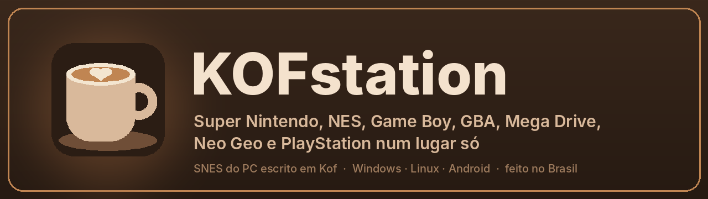
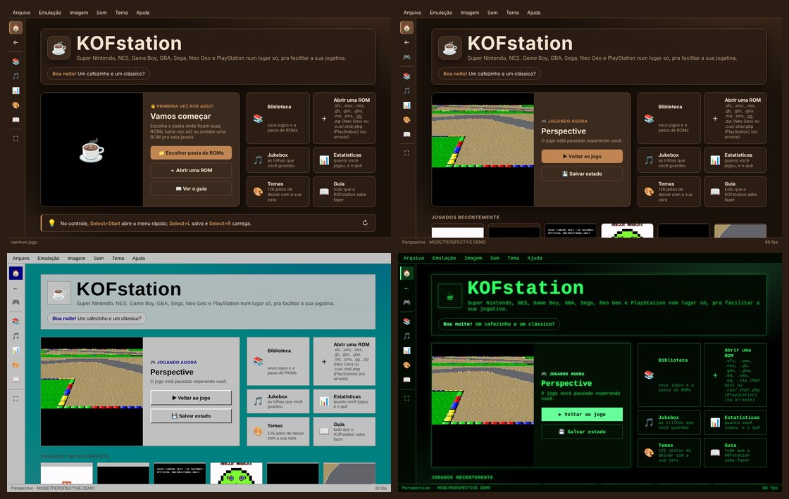
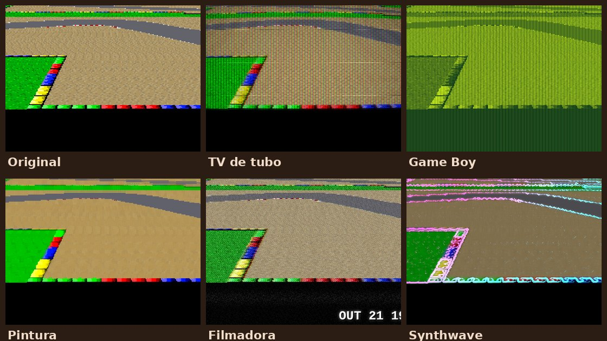
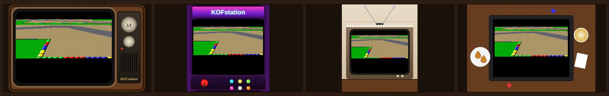
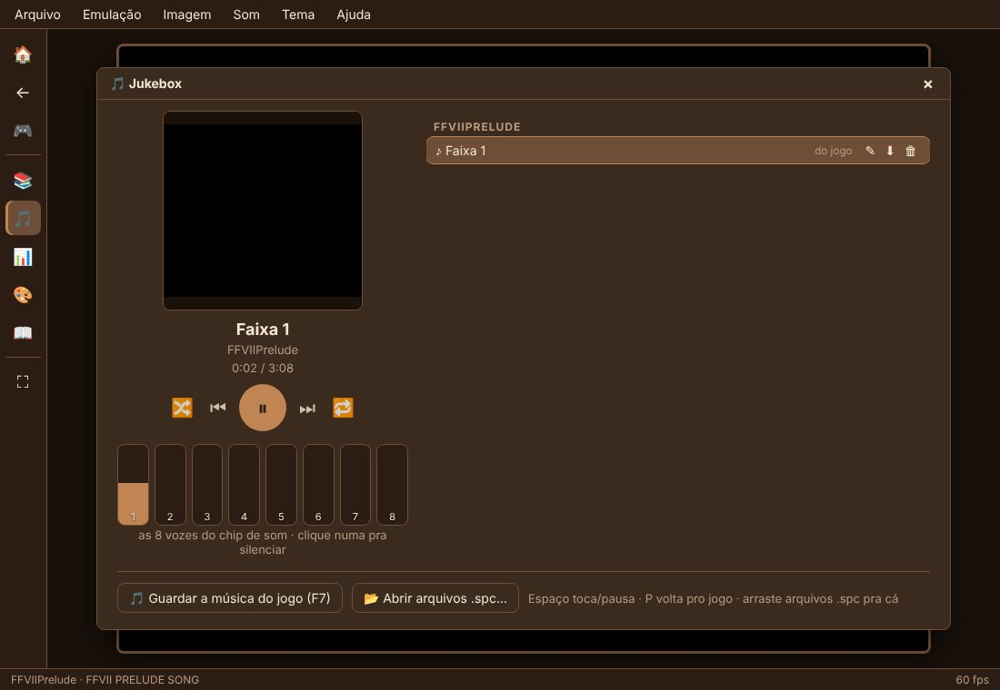
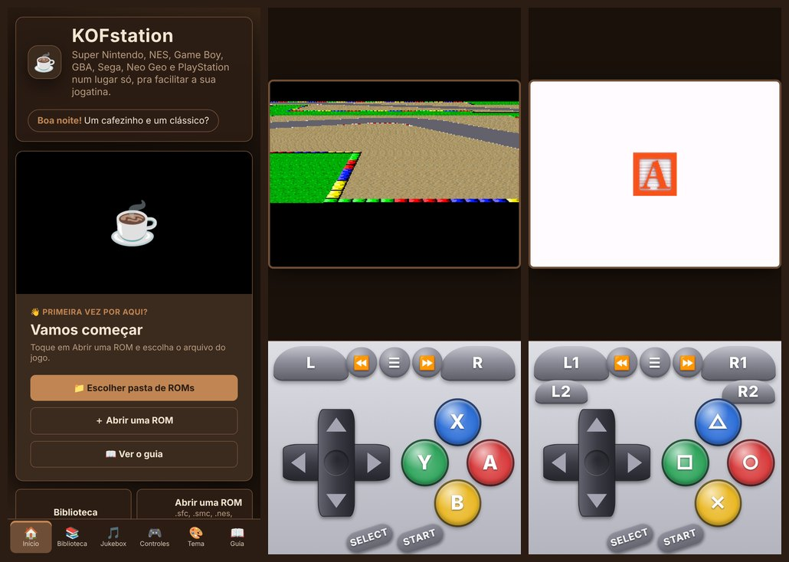
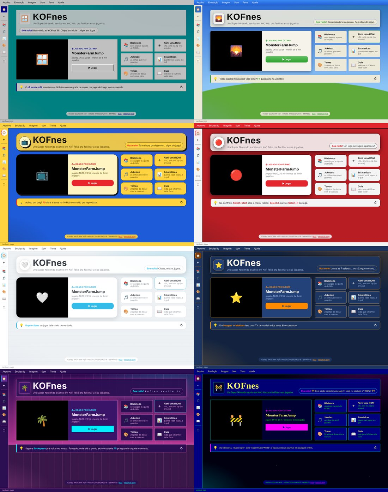

Baixe o KOFstation
Super Nintendo, NES, Game Boy, GBA, Mega Drive, Master System, Game Gear, Neo Geo e PlayStation num lugar só. De graça, sem propaganda, e ele se atualiza sozinho.
🪟 Windows
Um arquivo só, de 95 KB. Coloque numa pasta sua (Documentos, por exemplo) e dê dois cliques: na primeira vez ele baixa o resto sozinho (uns 20 MB).
Baixar KOFstation.exeSe o Windows disser "o Windows protegeu o computador": Mais informações → Executar assim mesmo (o programa não tem assinatura paga).
🤖 Android
App com controle na tela, em pé ou deitado. Se atualiza sozinho. O Android vai pedir pra permitir instalar apps de fora da Play Store.
Baixar KOFstation.apkNo celular o PlayStation ainda não está otimizado (jogos 3D travam); os outros consoles rodam bem.
🐧 Linux
Um script que roda em qualquer distro; precisa de um navegador Chromium (Chrome, Chromium, Edge, Brave). No terminal, dentro de uma pasta sua:
curl -LO https://raw.githubusercontent.com/Marcelao98/KOFStation/main/publicado/kofnes.sh && sh kofnes.sh
Na primeira vez ele baixa o resto. Depois, sh kofnes.sh --instalar põe no menu de aplicativos.
neogeo.zip); GBA e PlayStation funcionam sem BIOS.Como começar
- Abra o KOFstation e vá em Escolher pasta de ROMs (ou arraste um jogo pra janela).
- Escolha o jogo na Biblioteca. Da próxima vez ele aparece no Início pra continuar de onde parou.
- Explore: F4 abre o painel de imagem (TV de tubo, Game Boy, filmadora...), Imagem → Galeria de molduras, 126 temas e a jukebox com piano.
Por dentro





